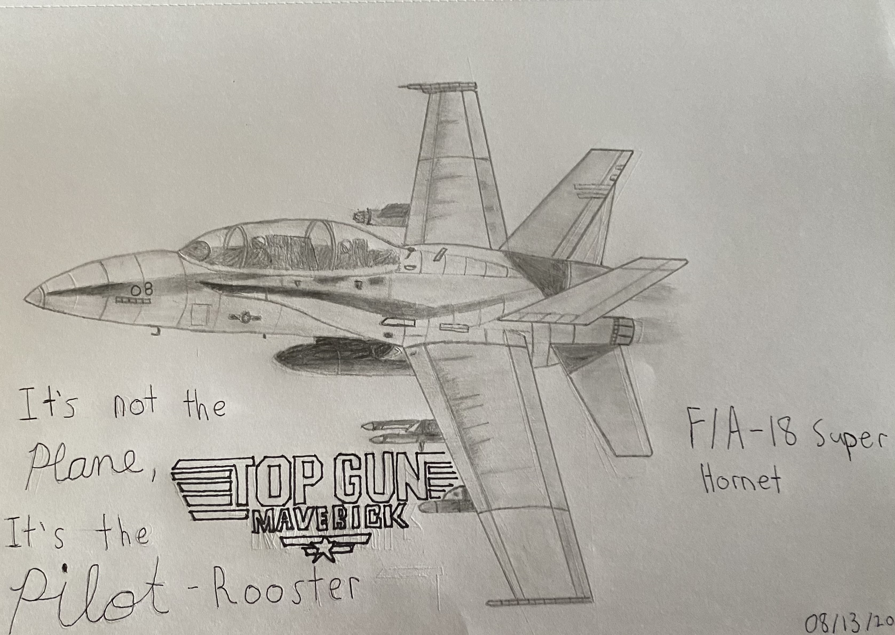

Aerospace Pictures
Aerospace Videos
Drawings
My Socials
Other Websites
☰
Aerospace Pictures
Aerospace Videos
Drawings
My Socials
Other Websites
☰
All of my drawings and paintings will be in this tab.
 |
I drew this bookmark of Bag End which is Bilbo's home in the Shire. The quote stated here is the first sentence of The Hobbit book. |

My Wilderland Map I did for a school project

Bag End "Bilbo's Home" from "The Hobbit" and "The Lord of the Rings"

The front and back of a bookmark I made of Sting from The Hobbit and the Lord of the Rings films.
Shadowfax, the lord of all horses. From "The Lord of the Rings" and is Gandalf's horse.

"Door of Durin". The entrance to the "Mines of Moria"
This is Bilbo's dagger sword from "The Hobbit" as this sword is very iconic to Bilbo.
|  |
A F/A-18 Super Hornet that I chose to draw while referencing it from Top Gun: Maverick. |
A F-14 Tomcat that I chose to draw while referencing it from the original Top Gun Movie.

The Millennium Falcon from "Star Wars"

Saturn V rocket used for the Apollo missions the the moon.

Cirrus SR-22 general aviation aircraft

Cessna 172 general aviation aircraft as I fly this aircraft for pilot training at the moment.
A bookmark I drew. The quote stated is quoted by Gene Kranz after the Apollo 1 fire and the drawing is an Apollo Command Service Module(CSM).

An Optical Illusion I did for school as I am very proud of this.
A realistic eye with the help and guidance from my friend

A sunset picture at the beach.

This was also a school project representing what "Art is"
An apple I just chose to draw
A fluffy cat that has a scary looking face.
 |
I messed around with my digital art app and ended up with this! it ended up pretty good actually. |

Yin Yang sunrise and sunset

The Milky Way Galaxy